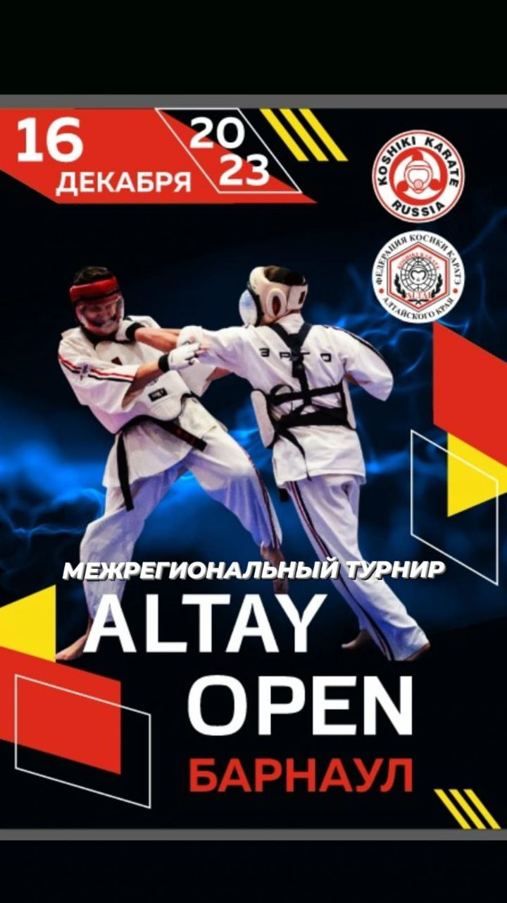

О виде спорта
Косики каратэ - в переводе с японского языка - "Жесткое каратэ". Это явление в мире боевых искусств,
появившееся в конце 70-х годов ХХ века по инициативе группы ведущих японских мастеров того времени,
ставило своей целью на основе лучших качеств традиционного окинавского и японского каратэ создать
современную универсальную соревновательную систему, которая смогла бы объединить все школы и направления каратэ.
Техника в Косики каратэ
Косики каратэ включает в себя различные техники и навыки,
которые требуют физической подготовки, ловкости и дисциплины.
Вот некоторые из наиболее важных приемов в Косики каратэ:
- Ката: Ката - это серия заранее подготовленных движений,
имитирующих ситуации самообороны. Это требует точности,
выбора времени и сосредоточенности. - Кумитэ: Кумитэ - это техника спарринга, которая включает в
себя полноконтактный бой с использованием защитного снаряжения.
Это требует стратегии, скорости и мощи. - Тайсо: Тайсо - это серия физических упражнений, которые
улучшают силу, выносливость и гибкость. Она включает в
себя упражнения на растяжку, кардиотренировки и
упражнения с отягощением.
Галерея

